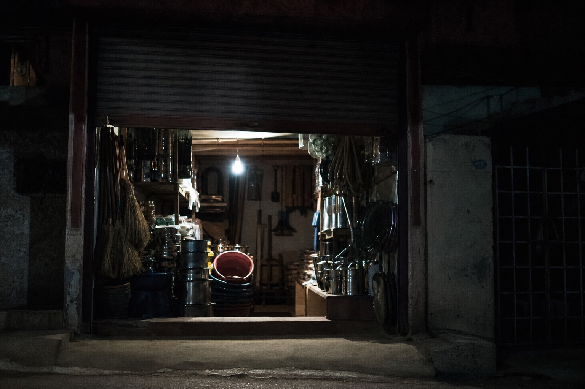

The dog and the scale have nothing to do with the Gu house. They stay because a classified board never stops that kind of post. Tonight you only need the Huaiji sign-off and the wire line. The ending on the sign-off can match the close-mic transcript. The wire can match page-B incidentals.
Apprentice on duty. Will not change a pin. Zhonghuai is on the tables. Shop shutter half down. Photo was a day-shift pass-by. No signboard characters on the face.
Look at the goods in person is a board rule. Nobody is looking at goods in the shop tonight. The person who looks at goods is on the tables, listening for whether the broadcast will change its line.
Users post their own ads look at the goods in person 29/42